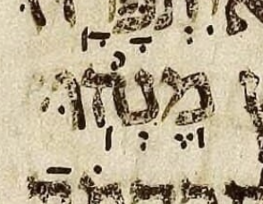
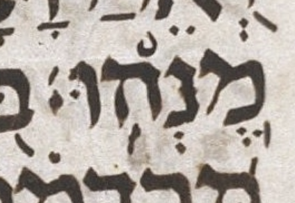
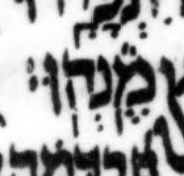
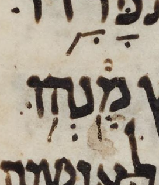

← Back to the case register.
Aleppo has both strokes at Job 4:12.

Leningrad has both strokes at Job 4:12.

Cambridge has both strokes at Job 4:12.

Sassoon has both strokes at Job 4:12.

Sassoon's later stroke is far from vertical: it slants northeast to southwest. I have no idea whether that slant is meaningful, but it is too conspicuous to leave unmentioned.
We usually regard the position of an “early meteg”—a meteg to the right of its vowel—as meaningless. Yet the stroke under the mem is to the right of its segol in both Aleppo and Leningrad. On this page's interpretation, both manuscripts therefore have an “early silluq” here, which seems an extraordinary coincidence. In Cambridge, the silluq under the mem is to the left of its segol, in the normal position.